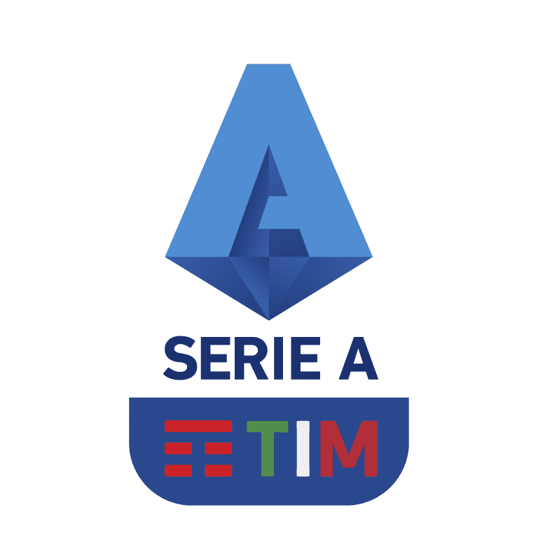

Titulos recentes da Inter
Ao longo de décadas, esta icônica equipe italiana tem enchido de orgulho os corações dos seus apaixonados torcedores. Aqui, convidamos você a reviver e celebrar os momentos inesquecíveis que construíram a trajetória vitoriosa da Inter. Dos triunfos nos campeonatos nacionais às emocionantes vitórias nas competições europeias, este é o espaço onde a história dos títulos do clube ganha vida. Junte-se a nós para relembrar os heróis, as partidas memoráveis e a inegável paixão que faz da Inter de Milão uma potência do futebol mundial.

CHAMPIONS
Desde a sua fundação em 1908, a Internazionale Milano, mais conhecida como Inter de Milão, tem sido uma força imparável no cenário do futebol mundial. Com uma trajetória repleta de triunfos, conquistas emocionantes e momentos inesquecíveis, o clube estabeleceu um legado duradouro que ecoa nos corações dos torcedores apaixonados ao redor do globo.
A Inter de Milão, com suas cores preto e azul real, emergiu como um verdadeiro ícone do futebol italiano e internacional. Desde os primeiros dias do calcio, o futebol italiano, o clube ganhou destaque rapidamente, exibindo um estilo de jogo audacioso e uma determinação feroz. A história da Inter é recheada de rivalidades lendárias, principalmente com a Juventus, criando alguns dos momentos mais intensos e memoráveis do esporte.

No entanto, a busca pela grandeza não foi sem desafios. A Inter de Milão enfrentou altos e baixos ao longo dos anos, atravessando períodos de renovação e reestruturação. A paixão dos torcedores permaneceu inabalável, independentemente das dificuldades enfrentadas pelo clube. E, finalmente, após uma espera de décadas, a Inter de Milão alcançou o auge novamente, conquistando a cobiçada Serie A na temporada 2009-2010, encerrando um jejum de títulos no campeonato italiano e preparando o terreno para um ressurgimento notável.
Além dos troféus e das façanhas em campo, a Inter de Milão também desfruta de um legado cultural e uma base de torcedores devotos que atravessam fronteiras. Os torcedores da Inter de Milão não são apenas espectadores, são uma parte vital da narrativa do clube, proporcionando um apoio inabalável em todos os momentos. As cores preto e azul da Inter de Milão unem fãs de todas as origens, e o estádio San Siro vibra com paixão e energia sempre que a equipe entra em campo.
Esta exploração da história da Internazionale Milano mergulha nas vitórias inesquecíveis, nas rivalidades fervorosas e nas histórias de triunfo sobre a adversidade. Desde os primeiros dias até os momentos atuais, a Inter de Milão permanece como um farol de excelência no mundo do futebol, inspirando gerações e deixando uma marca indelével na história esportiva. Junte-se a nós enquanto mergulhamos na rica tapeçaria da história da Inter de Milão, repleta de glória, conquistas e um legado que perdurará para sempre.
SERIE A TIM
O Impacto Imediato:
Além do êxito esportivo, o título também foi um momento de celebração para os torcedores. A energia contagiante das arquibancadas, mesmo em tempos desafiadores, refletiu o vínculo inquebrantável entre a equipe e seus apoiadores. A conquista do Campeonato Italiano não foi apenas uma vitória para a Inter de Milão, mas também um triunfo compartilhado com sua base de fãs apaixonada, que esteve ao lado do clube em cada vitória e derrota.
Adaptação Perfeita:
Além do êxito esportivo, o título também foi um momento de celebração para os torcedores. A energia contagiante das arquibancadas, mesmo em tempos desafiadores, refletiu o vínculo inquebrantável entre a equipe e seus apoiadores. A conquista do Campeonato Italiano não foi apenas uma vitória para a Inter de Milão, mas também um triunfo compartilhado com sua base de fãs apaixonada, que esteve ao lado do clube em cada vitória e derrota.

Além de suas habilidades no campo, Dumfries também mostrou uma liderança natural, assumindo a responsabilidade de orientar os companheiros de equipe durante as partidas e os treinamentos. Sua mentalidade positiva e ética de trabalho incansável têm sido uma influência inspiradora para os jogadores mais jovens do elenco.
No cenário competitivo do futebol, poucas vitórias são tão gloriosas e impactantes quanto a conquista de um campeonato nacional. Em um esporte onde a rivalidade é intensa e a competição é feroz, emergir como campeão é a culminação de esforços árduos, dedicação incansável e uma determinação inabalável. A Internazionale Milano, uma das instituições futebolísticas mais reverenciadas do mundo, vivenciou exatamente isso em sua mais recente façanha: a conquista do título do Campeonato Italiano.